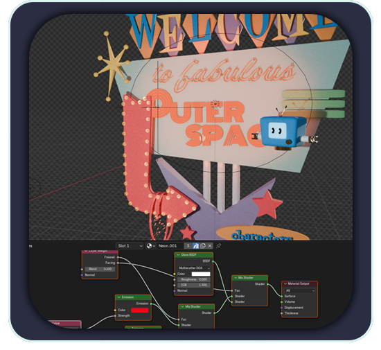
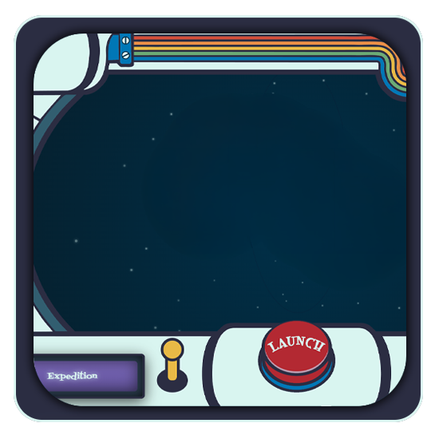
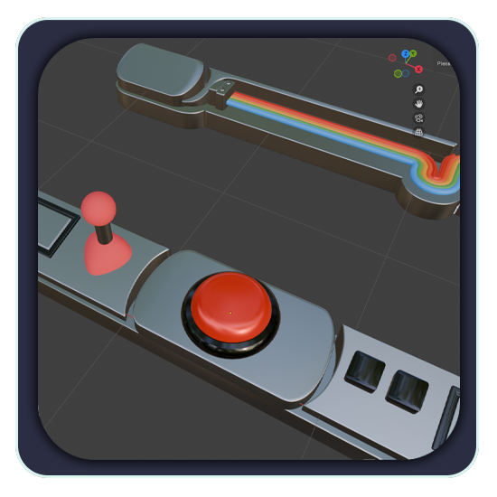
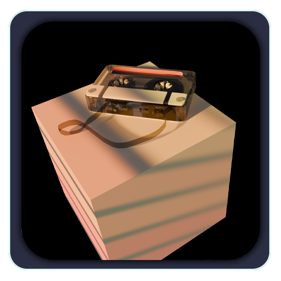

After all those commits editing lights and reuploading glbs… I 86ed that threejs title. And it wasn't the lights or the model or even the fact that threejs uses a Y-up axis. It was so… boring! Listen I know this is just the devlogs so it doesn't NEED to be complicated, but one thing you'll learn about me, I really need everything to have the right vibes!
So, I finished this super retro asteroid sign post for the game intro and decided right then and there to reoutfit the signs in it to use as navigation here! Just wait until you see the neon flickering, I'm so proud of myself! When I get these sparks behaving (they look okay in the still render, I picked my favorite frame… but the animation still isn't right) I'll replace the navigation with an animated version!
Speaking of updates, I also rendered a version of all 12 characters for the new characters page! I'm making decent progress, huh?

Devlog Updates!
To Three or not to Three
I am considering integrating three.js into the game itself but I had such a HARD TIME getting it right for the logo here on the devlog site so I'm a little afraid to try! This has been my first time working with model imports into three.js and probably half of my commits here were me reuploading the glb and adjusting the lighting which… I'm still not happy with. I literally had the model backwards on the Z axis and, since the back and front of the blue ellipse look the same… for a LONG while I thought it was an issue with how the mesh was joined, something wrong with the material, on and on. What a trial! Yes I know I should have tested it offline first but… okay I’m comfortable with nodejs but everything else I would need to do to get glbs displaying locally is a bit daunting.
Ideally if Moonbeam gets a decent reception, I would love to take these models I'm making and create a 3D version of the game… I'm not sure if the idea of doing it all in three (or with three and phaser?) is genius or absolutely insane. But for the game itself, more than one minigame is written in threejs (and I will get integrating some of these 3D models soon) and I'm seriously considering using three.js for the whole HUD and projecting the 2D canvas onto a 3D object. In my heart, though, I really want to make a full threejs interactive “hub” where minigames, menus, and the main game are accessed!
From 2D to 3D
Making progress on the HUD design is where I am being held up lately. I took my 2D art and hand vectorized it in Flexisign 8; I still have a copy from my days at the sign shop and I like it infinitely more than Illustrator or Affinity. Problem is it's on my Lenovo thinkpad, which is a super tiny screen! Didn't deter me though, and I got the file all cleaned up and mapped out to my in-game UI.
Now I had an idea in the wee hours of the morning ...and decided I want to add the pieces in to the animation I've been working on, so I'm at an impasse until I finish it.
These SVGs!!! They're driving me crazy. I've cleaned them up as curves, and as meshes, I've remeshed them and tried cleaning up from there, I've done painstaking edge loop sliding to line things up, But I fear I may need to rebuild some of these pieces from the ground up, or even (dare I say it) rearrange some in-game UI as it might be easier to change that based on what I make in blender rather than work with these shapes. It didn't help that my keyboard broke the other day (the USBC charging cable LITERALLY melted) working with the on screen keyboard in blender is NOT recommended, but I did take a break from the HUD design to build some collectibles as it is SO much more fun to make a chunky cassette tape than try to wrangle those rounded SVG boxes.
  
R is for Robot
And S is for Stardust!!!
I made that whole last post about 3D art without even getting into the game itself! I've been having a ton of fun modeling this scene (intended as a promo) using a little bit of everything I've been teaching myself. We've got some fun procedural stuff like the pile of capsules at the bottom of the crane machine and the gloopy liquid in the pipes, some done-by-hand animations like Laika's front paw moving as well as the crane arm hitting the capsule, animating textures moving on the ringed planet, animating emissions/lights on and off, generating noise on the F curve to make Laika bark, a simple bone rig for her wagging antenna... and I even challenged myself to make a slinky and a rolled up scroll of paper!
This has been a fun learning experience, but I mainly wanted to start modeling so that Moonbeam has a hybrid 2D/3D art style. 3D is super nostalgic for me, and you'll see I'm drawing inspo from some of my faves, games like Spyro and deBlob. And, though Moonbeam is nothing like old Resident Evil or Final Fantasy games, the call to render things in 3D to make them into 2D assets is too real to ignore. Once I'm done with this (admittedly very messy) animation it'll be time to model the collectible art, make the intro sequence, and a few other FMVs!


Welcome to the 3rd Dimension
Adventures in 3D Modeling!
For the past two weeks I've been teaching myself how to use blender. Why, you might ask? I'm asking myself the same thing.
Blender. Is. Terrifying.
Have you ever played a game with an impossibly deep 3D map? I'm talking like… checking out the depths of the ocean in Bladefist Bay or off the Echo Isles in Vanilla WOW. Places you're not supposed to explore. But if you're like me and you swim a bit further out to farm just one more dumb lobster monster and you get a glimpse of how far the coastline goes down... It was fathoms and fathoms in comparison to my little troll (but for me, only a few inches on my screen, right?) Used to fill me with literal dread. Once I was safely back on good old comprehendable sized land, I would have to tell myself "It's not real, Wimbles." and reroute my anxiety.
Well, my first few days ever touching a 3D art program turned out to be a constant fight with that part of my brain! The scaling, zooming in or looking at the geometry of meshes from the inside was doing a number on me. This spiral made my head spin!


It's been getting better, but I still feel really tiny! Even though I can zoom way out on big things, that feels way more objective. Zooming in is where it feels weird. On the bright side… I totally get how Toy Story came together as an idea. I feel like if it didn't exist, but 3D modeling did, it would only be a matter of time before someone felt small while modeling the inside of some crane game machine and voila! A whole franchise born just like that.
Hello World!
Welcome to the Moonbeam devlog!
I'm Wimbly, and this is the home base for my solo game project! Moonbeam is fast approaching the alpha stage and (I hope) will be your fave cozy go-to game in the future! Moonbeam's protagonist, Cosmo is a cute TV headed robot tasked with cleaning up galaxies and rebuilding constellations. Collect stardust and moonbeams to build your own skybox, unlock new characters, customize your UI with special themes, and find your favorite radio stations (and maybe a few secrets!) while drifting through space.
With the main game loop set up, the radio and power ups functional, the save system being implemented… I enter the daunting stage of polishing the art style (no wonder I'm writing devlogs instead!)
Initially I wanted to go for a very Space Age/Googie vibe, with a little Rubber Hose just to make it really 50's! However… I've grown a little attached to my stand-ins. They SAY make it exist and you can make it look good later, but now I'm just thinking how can I preserve this super clean minimalism while integrating the style I want to go for? I know updating Cosmo from a single dot will go a lot of the way, but I might end up replacing more things than I would like to. I just really like these moonbeams though!! I've got to figure out a way to make it all work together.